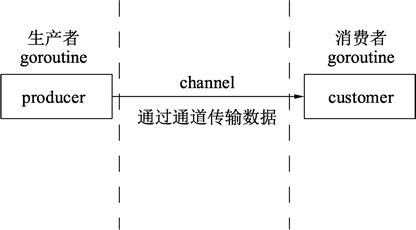

Go语言为并发而生
在早期 CPU 都是以单核的形式顺序执行机器指令。Go语言的祖先C语言正是这种顺序编程语言的代表。顺序编程语言中的顺序是指：所有的指令都是以串行的方式执行，在相同的时刻有且仅有一个 CPU 在顺序执行程序的指令。
随着处理器技术的发展，单核时代以提升处理器频率来提高运行效率的方式遇到了瓶颈，单核 CPU 发展的停滞，给多核 CPU 的发展带来了机遇。相应地，编程语言也开始逐步向并行化的方向发展。
虽然一些编程语言的框架在不断地提高多核资源使用效率，例如 Java 的 Netty 等，但仍然需要开发人员花费大量的时间和精力搞懂这些框架的运行原理后才能熟练掌握。
作为程序员，要开发出能充分利用硬件资源的应用程序是一件很难的事情。现代计算机都拥有多个核，但是大部分编程语言都没有有效的工具让程序可以轻易利用这些资源。编程时需要写大量的线程同步代码来利用多个核，很容易导致错误。
Go语言正是在多核和网络化的时代背景下诞生的原生支持并发的编程语言。Go语言从底层原生支持并发，无须第三方库，开发人员可以很轻松地在编写程序时决定怎么使用 CPU 资源。
Go语言的并发是基于 goroutine 的，goroutine 类似于线程，但并非线程。可以将 goroutine 理解为一种虚拟线程。Go语言运行时会参与调度 goroutine，并将 goroutine 合理地分配到每个 CPU 中，最大限度地使用 CPU 性能。
多个 goroutine 中，Go语言使用通道（channel）进行通信，通道是一种内置的数据结构，可以让用户在不同的 goroutine 之间同步发送具有类型的消息。这让编程模型更倾向于在 goroutine 之间发送消息，而不是让多个 goroutine 争夺同一个数据的使用权。
程序可以将需要并发的环节设计为生产者模式和消费者的模式，将数据放入通道。通道另外一端的代码将这些数据进行并发计算并返回结果，如下图所示。
整段代码中，没有线程创建，没有线程池也没有加锁，仅仅通过关键字 go 实现 goroutine，和通道实现数据交换。
随着处理器技术的发展，单核时代以提升处理器频率来提高运行效率的方式遇到了瓶颈，单核 CPU 发展的停滞，给多核 CPU 的发展带来了机遇。相应地，编程语言也开始逐步向并行化的方向发展。
虽然一些编程语言的框架在不断地提高多核资源使用效率，例如 Java 的 Netty 等，但仍然需要开发人员花费大量的时间和精力搞懂这些框架的运行原理后才能熟练掌握。
作为程序员，要开发出能充分利用硬件资源的应用程序是一件很难的事情。现代计算机都拥有多个核，但是大部分编程语言都没有有效的工具让程序可以轻易利用这些资源。编程时需要写大量的线程同步代码来利用多个核，很容易导致错误。
Go语言正是在多核和网络化的时代背景下诞生的原生支持并发的编程语言。Go语言从底层原生支持并发，无须第三方库，开发人员可以很轻松地在编写程序时决定怎么使用 CPU 资源。
Go语言的并发是基于 goroutine 的，goroutine 类似于线程，但并非线程。可以将 goroutine 理解为一种虚拟线程。Go语言运行时会参与调度 goroutine，并将 goroutine 合理地分配到每个 CPU 中，最大限度地使用 CPU 性能。
多个 goroutine 中，Go语言使用通道（channel）进行通信，通道是一种内置的数据结构，可以让用户在不同的 goroutine 之间同步发送具有类型的消息。这让编程模型更倾向于在 goroutine 之间发送消息，而不是让多个 goroutine 争夺同一个数据的使用权。
程序可以将需要并发的环节设计为生产者模式和消费者的模式，将数据放入通道。通道另外一端的代码将这些数据进行并发计算并返回结果，如下图所示。

【实例】生产者每秒生成一个字符串，并通过通道传给消费者，生产者使用两个 goroutine 并发运行，消费者在 main() 函数的 goroutine 中进行处理。提示：Go语言通过通道可以实现多个 goroutine 之间内存共享。
package main
import (
"fmt"
"math/rand"
"time"
)
// 数据生产者
func producer(header string, channel chan<- string) {
// 无限循环, 不停地生产数据
for {
// 将随机数和字符串格式化为字符串发送给通道
channel <- fmt.Sprintf("%s: %v", header, rand.Int31())
// 等待1秒
time.Sleep(time.Second)
}
}
// 数据消费者
func customer(channel <-chan string) {
// 不停地获取数据
for {
// 从通道中取出数据, 此处会阻塞直到信道中返回数据
message := <-channel
// 打印数据
fmt.Println(message)
}
}
func main() {
// 创建一个字符串类型的通道
channel := make(chan string)
// 创建producer()函数的并发goroutine
go producer("cat", channel)
go producer("dog", channel)
// 数据消费函数
customer(channel)
}
运行结果：
dog: 2019727887
cat: 1298498081
dog: 939984059
cat: 1427131847
cat: 911902081
dog: 1474941318
dog: 140954425
cat: 336122540
cat: 208240456
dog: 646203300
- 第 03 行，导入格式化（fmt）、随机数（math/rand）、时间（time）包参与编译。
- 第 10 行，生产数据的函数，传入一个标记类型的字符串及一个只能写入的通道。
- 第 13 行，for{} 构成一个无限循环。
- 第 15 行，使用 rand.Int31() 生成一个随机数，使用 fmt.Sprintf() 函数将 header 和随机数格式化为字符串。
- 第 18 行，使用 time.Sleep() 函数暂停 1 秒再执行这个函数。如果在 goroutine 中执行时，暂停不会影响其他 goroutine 的执行。
- 第 23 行，消费数据的函数，传入一个只能写入的通道。
- 第 26 行，构造一个不断消费消息的循环。
- 第 28 行，从通道中取出数据。
- 第 31 行，将取出的数据进行打印。
- 第 35 行，程序的入口函数，总是在程序开始时执行。
- 第 37 行，实例化一个字符串类型的通道。
- 第 39 行和第 40 行，并发执行一个生产者函数，两行分别创建了这个函数搭配不同参数的两个 goroutine。
- 第 42 行，执行消费者函数通过通道进行数据消费。
整段代码中，没有线程创建，没有线程池也没有加锁，仅仅通过关键字 go 实现 goroutine，和通道实现数据交换。
关注公众号「站长严长生」，在手机上阅读所有教程，随时随地都能学习。内含一款搜索神器，免费下载全网书籍和视频。

微信扫码关注公众号